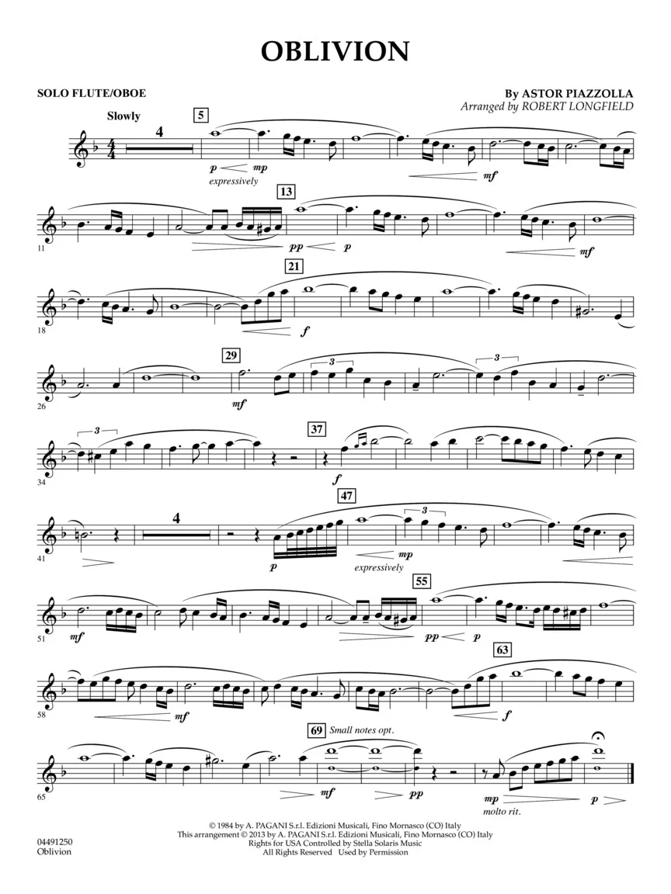

Oblivion je lyrická skladba, která patří mezi nejklidnější Piazzollovy kompozice. Její melodie je velmi jemná a melancholická. Skladba se často používá ve filmech a dramatických scénách. Má charakter meditativní hudby, která dokáže navodit přemýšlivou atmosféru. Oblivion ukazuje citlivější stránku Piazzollovy tvorby.
Hudebníci ji často interpretují jako sólový kus nebo v komorních sestavách. Její jednoduchost je zdánlivá, protože vyžaduje precizní výstavbu fráze. Publikum oceňuje její emocionální hloubku a klidné tempo. Skladba je často považována za jednu z jeho nejkrásnějších. Oblivion potvrdil, že Piazzolla uměl tvořit nejen dramatická, ale i intimní díla.
